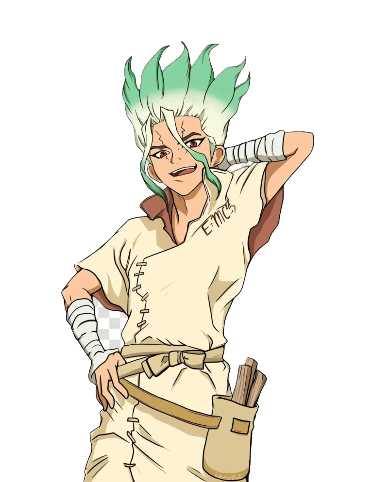
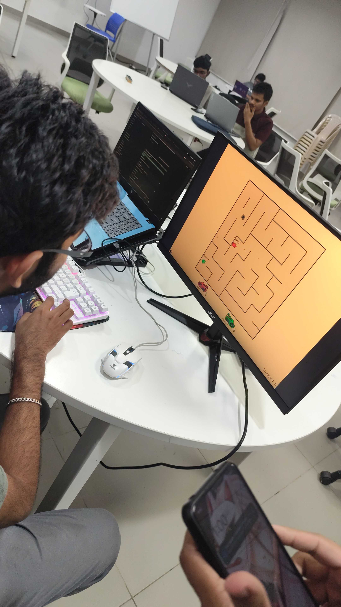
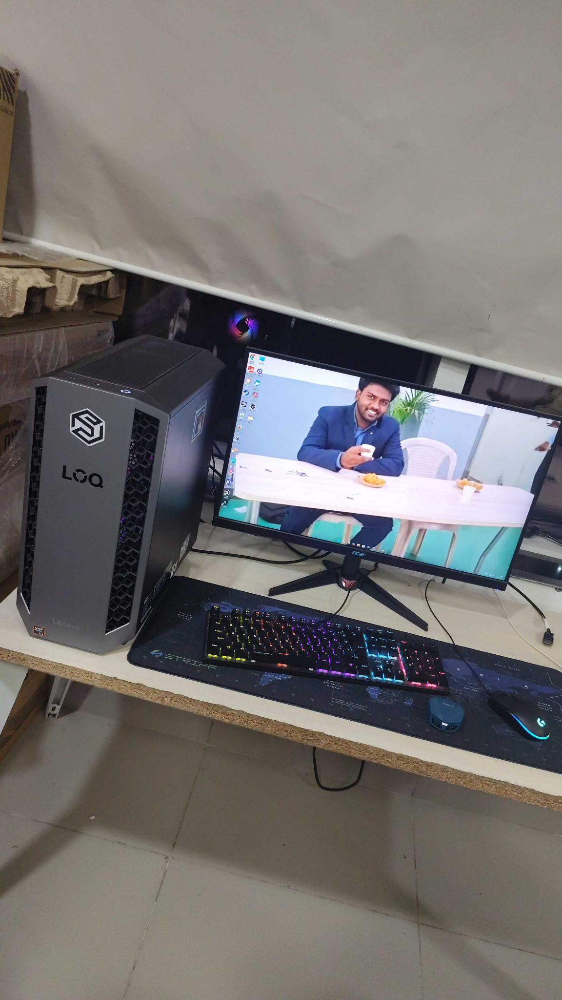

GOATED HUMOUR
At least according to the highly unbiased source: me.
I'm Shivanand. I build projects for fun, chase research rabbit holes, live on Fedora, and occasionally try to make my brain cooperate.

This is the face behind the commits.
Professional enough for a portfolio. Chaotic enough to still be me.
Still figuring it out. That's kind of the point.
Things didn't go exactly as planned. Good. It forced me to rethink what I actually wanted.
Started exploring CSE, AI/ML, labs, clubs and far too many ideas at once.
Research and building started becoming more serious than just “let's make a project.”
Deep-learning, image forensics, open source, Linux and trying to become frighteningly consistent.
Chill guy. Questionable sleep schedule. Goated sense of humour. Brain running 37 tabs.
I do projects because I genuinely enjoy making things. I want to get deeper into research, especially around AI/ML, computer vision and image forensics. I use Fedora, I like tinkering with Linux, and yes — configuring Hyprland is currently somewhere on the list.
I can be wildly inconsistent, overthink simple things, change moods faster than a playlist, and still somehow get obsessed enough with an idea to build it.
Some things don't belong on a resume. These do belong here.
At least according to the highly unbiased source: me.
Ideas, tabs, repositories, music, Linux configs. Everything is somehow related.
Currently obsessed with Fedora and trying to configure Hyprland without breaking the universe.
Code reviews are fine. “Trust me bro” is not.
Chill one minute. Deep philosophical crisis about a CSS margin the next.
If an idea sounds interesting enough, I'm probably going to build a questionable prototype.
Things I do when I'm not pretending to be productive.
Anime. Music. Linux. Manga. Photography. Random rabbit holes. Basically, several hobbies fighting for RAM.
That Time I Got Reincarnated as a Slime is one of my favourites. Rimuru has permanent residence in my anime brain.
Favourite universe →
Science, invention, humanity and a ridiculous amount of problem-solving. Dr. Stone hits exactly the right spot.
10 billion percent →Counting Stars, Sada Siva, Spirit of Jersey, Om and whatever else matches the current mood.
My soundtrack →Breaking things in Fedora, fixing them, and then deciding I should configure Hyprland too.
Terminal activities →A random question can become a paper, a GitHub repo, or a completely unnecessary prototype.
Curiosity → experimentA little research gravity well — where curiosity gets pulled in and ideas explode into projects.
Labs are where I get to turn curiosity into projects, experiments and research. There is usually a laptop open, someone debugging something, and at least one person saying “bro, just run it once.”
SINGULARITY LAB · AFFILIATE · PRAJNA KRITRIMA


Singularity is the broader research and innovation space. Think of it as the place where different technical interests get a room, a laptop and permission to become unnecessarily ambitious.
Prajna Kritrima is the AI/ML-focused lab I am part of. This is where I want to learn properly, build useful things, explore research ideas, and occasionally discover that my code has chosen violence.
Things I built because the idea wouldn't leave me alone.
A deep-learning image-forensics project for detecting hidden information in images using CNN-based approaches.
A research direction focused on detecting AI-generated and steganographically manipulated scientific images.
An experiment in using AI-assisted monitoring and automated recovery workflows for software systems.
Privacy masking, small utilities, prototypes, experiments and random ideas that become repos at 2 AM.
I want to make things worth putting on paper.
My main direction is image forensics and deep learning: understanding how manipulated and AI-generated images can be detected, especially in scientific imagery.
From “what if?” to something you can actually cite.
Research around image steganography detection, model comparison and noise-based forensic features.
Exploring AI-generated and steganographically manipulated scientific imagery with hybrid deep-learning architectures.
Things I actually use, things I'm learning, and things I want to weaponize next.
╭─ nandu@fedora ─────────────────────────╮ │ OS Fedora Workstation │ │ Kernel Linux │ │ CPU AMD Ryzen 7 │ │ GPU NVIDIA RTX 4050 │ │ RAM 16 GB │ │ Disk 1 TB │ │ Display 165 Hz │ │ Shell Terminal / Bash │ ╰─────────────────────────────────────────╯ $ fastfetch
FASTFETCH-STYLE SNAPSHOT — replace this block with your actual fastfetch screenshot whenever you want the real terminal output.
TODAYOfficially joined Singularity Lab as an affiliate.
LEARNINGDSA · C++ · Linear Algebra · Linux · backend development
BUILDINGComputer vision, image-forensics and full-stack experiments
NEXTFastAPI · Spring Boot · React · open source · paid internship hunt
RESEARCHMicroscopy forensics · AI-generated image detection · hybrid CNN × ViT
TRYING TOTurn random ideas into finished projects instead of collecting unfinished tabs
29 / 09 / 2026
Today changed the lab chapter.
01Now an official Singularity Lab affiliate.
02Building a portfolio that actually feels like me — research, Linux, projects, photos and chaos.
03Moving deeper into backend/full-stack development while keeping AI/ML research running.
04Next targets: finish stronger projects, contribute to open source, attend hackathons and land a paid internship.
A portfolio needs a soundtrack. Mine changes with the mood.
Put your own MP3 files inside the music folder. Then rename them to the filenames below — the player will work locally and after deployment.
The receipts.
Repos, experiments, research and questionable ideas — all slowly turning into an actual body of work.
Somewhere between a project and “let's see what happens.”
RULE OF EXPERIMENTS → if it teaches me something, it wasn't wasted.
A few frames from the world outside the terminal.


Lab days, random photos, unfinished ideas and proof that certain days actually happened.
Leave something behind.
Found something interesting? Say hi. Roast the design. Leave a thought. The wall is yours.
Question? Throw it at me.
Could be about a project, AI/ML, research, Linux, anime, music, or why I decided CSS needed this much JavaScript.
You made it all the way down here.
Now go outside. Touch grass. Or open another GitHub repo. Your call.
BACK TO TOP ↑Let's build something interesting. Or argue about Linux configs.